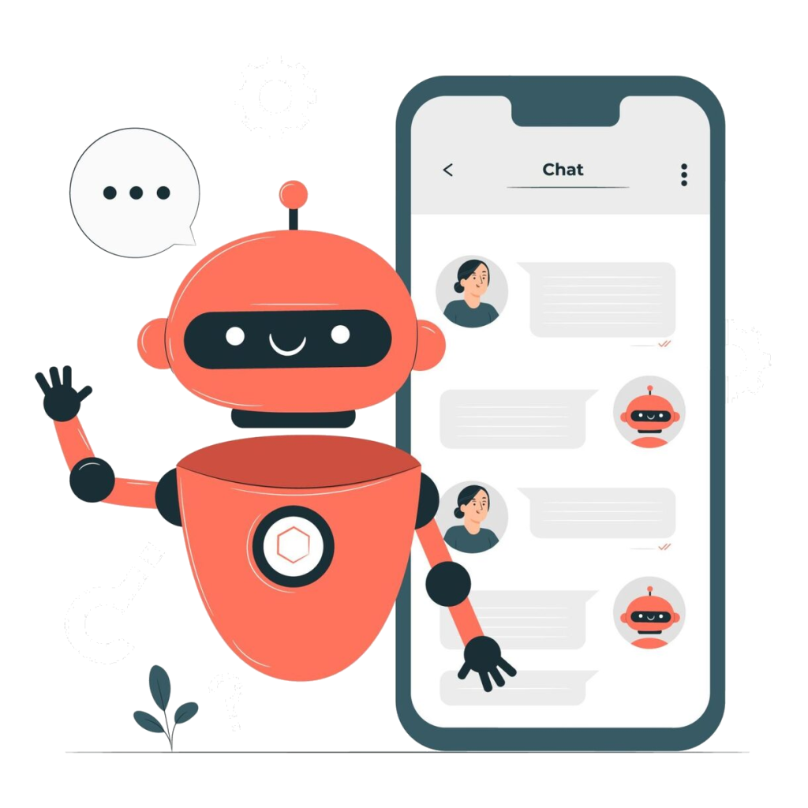

Un chatbot, aussi appelé agent conversationnel , est
un “robot de discussion” qui imite les
conversations humaines et avec lequel vous
interagissez via une interface de chat
(ex. Facebook Messenger, Twitter, Slack, Telegram, site web) ou avec la voix par exemple des applications pour assistants personnels type Google Home ou Google Assistant sur votre smartphone. Vous avez probablement déjà utilisé Siri,
Alexa ou Cortana sur votre smartphone
pour mettre une alarme,
appeler un ami ou organiser une réunion ?
Alors vous voyez que vous avez utilisé un Chatbot !

Chatbot : Interaction avec l'utilisateur
l'analyse et comprehension du langage
Pour ce qui est de la compréhension du langage ,
le chatbot intelligent de Botnation agit en deux
étapes. Il commence par analyser les mots-clés
présents dans la requête de l’utilisateur ou du
client afin de lui envoyer une réponse.
À ce niveau, il est encore à une étape
de programmation très basique puisqu’il
n’essaie pas de détecter l’intention
derrière les requêtes des utilisateurs.
À la seconde étape, le chatbot ia se sert de
la technologie NLU afin de mieux cerner l’intention
derrière la requête du client. La plupart des
chatbots associent généralement la volonté de
l’utilisateur à une entité. Il est certes vrai
que cette capacité de compréhension du chatbot
est programmée. Mais son fonctionnement est optimisé
par la présence de l’intelligence artificielle.
Le bot de Botnation est un chatbot qui se sert
d’algorithmes de machine learning pour détecter les
intentions des clients en suivant un principe
de probabilité. L’intelligence artificielle
permet donc à cet agent conversationnel de mieux
évaluer les requêtes du client et de fournir
les réponses ou le service adapté.
Peut considerer le chatbot comme une intelligence artificielle ?
Si on devait se fier à la définition fournie par Google à
propos de l’intelligence artificielle, nous pourrions répondre
oui à cette question. Sa capacité de compréhension du langage
et sa logique non scripté,
sont des éléments qui jouent en sa faveur.
L’intelligence artificielle va aider le chatbot à améliorer
ses capacités de réponses, d’analyse, de compréhension,
mais surtout de gestion
de la logique des conversations avec un utilisateur
ou un client d'ou on peut expliquez le chatgpt comme
l'un des plus puissant chatbot jamais réalisé.